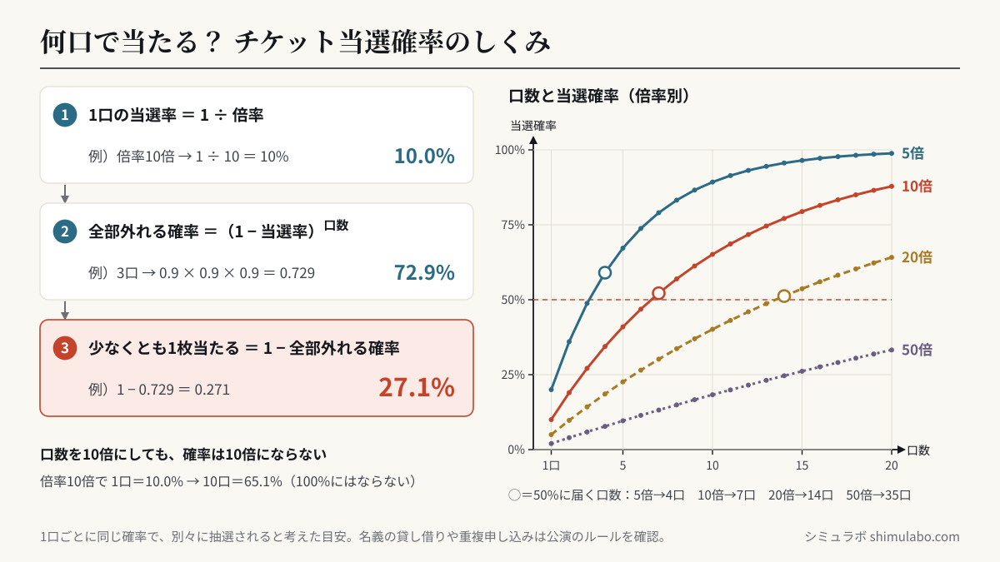
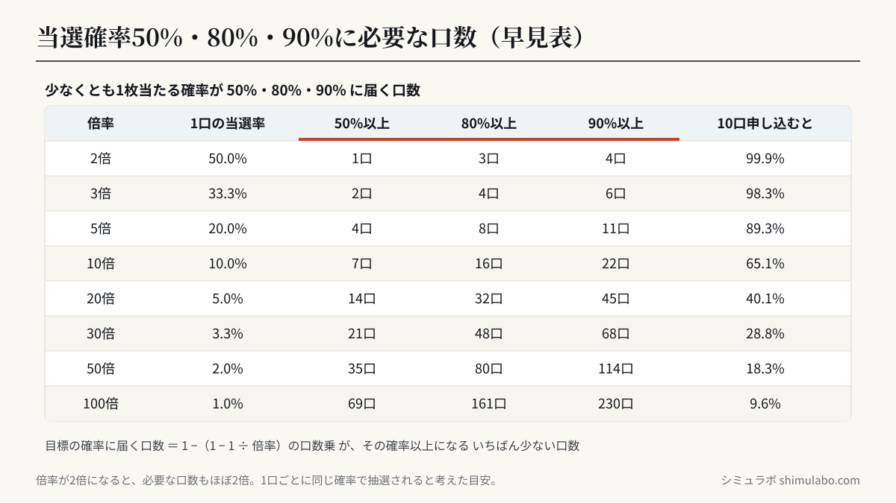

計算方法
計算式
1口の当選率 ＝ 1 ÷ 倍率
少なくとも1当選 ＝ 1 −（1 − 当選率）^口数
1口の当選率 ＝ 1 ÷ 倍率
少なくとも1当選 ＝ 1 −（1 − 当選率）^口数
口数を増やすほど当選確率は上がりますが、倍率が高いと頭打ちに。複数名義・複数公演・先行抽選の活用が当選への近道。ただしルールやマナーは守って楽しみましょう。






図はタップすると大きく表示されます。資料やSNSに使うときは、出典「シミュラボ」とページのURLを添えてください。
口数ごとの当選確率（早見表）
| 倍率 | 1口 | 3口 | 5口 | 10口 | 20口 |
|---|---|---|---|---|---|
| 2倍 | 50.0% | 87.5% | 96.9% | 99.9% | 100.0% |
| 5倍 | 20.0% | 48.8% | 67.2% | 89.3% | 98.8% |
| 10倍 | 10.0% | 27.1% | 41.0% | 65.1% | 87.8% |
| 20倍 | 5.0% | 14.3% | 22.6% | 40.1% | 64.2% |
| 50倍 | 2.0% | 5.9% | 9.6% | 18.3% | 33.2% |
倍率が10倍なら、1口では10%でも、10口申し込めば約65%。ただし20倍・50倍の公演では、口数を増やしても確率の伸びはゆるやかです。
倍率の出し方
倍率は「応募数 ÷ 座席数」です。座席数は会場の収容人数から、ステージの位置や機材席のぶんを引いた数になります。1回の申し込みで2枚まで申し込める公演では、当選の単位は「1申し込み」なので、座席数を半分にして計算すると実際に近くなります。
| 会場の種類 | 収容人数の目安 |
|---|---|
| ドーム | 約4万〜5.5万人 |
| スタジアム | 約3万〜7万人 |
| アリーナ | 約1万〜2万人（大型は3万人超も） |
| ホール | 約1,500〜5,000人 |
| ライブハウス | 数百〜約2,500人 |
収容人数は会場や公演の組み方で大きく変わります。正確な数字は会場の公式サイトで確認してください。
よくある質問
- 当落シミュレーターとは？
- 抽選の倍率と応募口数から、少なくとも1枚当たる確率を計算するツールです。1口の当選率を1÷倍率とし、口数ぶん申し込んだときに全部外れる確率を1から引いて求めます。
- 名義や公演を増やすと、どれくらい当たりやすくなる？
- 倍率10倍なら、1口で10%、3口で約27%、10口で約65%です。結果の下に口数ごとの確率表が出ます。ただし名義の貸し借りや、同じ公演への重複申し込みを禁止している公演も多いので、必ず申し込みのルールを確認してください。
- FC先行と一般発売はどちらが当たりやすい？
- 一般に、申し込める人が会員に限られるFC先行の方が倍率は低くなりやすいです。ただし配分される席数は公演ごとに異なり、公表されないことがほとんどです。
- 倍率が分からない
- SNSの体感や過去実績を参考に。10〜数十倍の人気公演も珍しくありません。
- データは送信されますか？
- いいえ。計算はすべてブラウザ内で完結します。